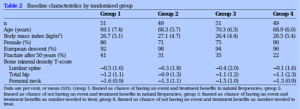

<?xml version="1.0" encoding="UTF-8"?>
<table title="table2" id="table2" class="tabcontent" xmlns="http://www.w3.org/1999/xhtml">
 <tr>
  <td>
   
   <p>corpus-oa-validation/10.1136_bmjopen-2016-013703/tables/table2/table.svg.png</p>
  </td>
  <td>
   <table class="table">
    <caption/>
    <tr>
     <th/>
     <th class="cell">Group 1 </th>
     <th class="cell">Group 2 </th>
     <th class="cell">Group 3 </th>
     <th class="cell">Group 4 </th>
    </tr>
    <tr>
     <td class="cell">n</td>
     <td class="cell">51</td>
     <td class="cell">49</td>
     <td class="cell">51</td>
     <td class="cell">49</td>
    </tr>
    <tr>
     <td class="cell">Age (years)</td>
     <td class="cell">69.1 (7.4)</td>
     <td class="cell">68.3 (5.7)</td>
     <td class="cell">70.3 (6.3)</td>
     <td class="cell">68.9 (6.0)</td>
    </tr>
    <tr>
     <td class="cell">Body mass index (kg/m )^{2}</td>
     <td class="cell">26.7 (5.1)</td>
     <td class="cell">27.1 (4.7)</td>
     <td class="cell">26.4 (4.4)</td>
     <td class="cell">26.5 (5.4)</td>
    </tr>
    <tr>
     <td class="cell">Female (%)</td>
     <td class="cell">86</td>
     <td class="cell">71</td>
     <td class="cell">75</td>
     <td class="cell">90</td>
    </tr>
    <tr>
     <td class="cell">European descent (%)</td>
     <td class="cell">92</td>
     <td class="cell">98</td>
     <td class="cell">94</td>
     <td class="cell">96</td>
    </tr>
    <tr>
     <td class="cell">Fracture after 50 years (%)</td>
     <td class="cell">41</td>
     <td class="cell">31</td>
     <td class="cell">35</td>
     <td class="cell">22</td>
    </tr>
    <tr>
     <td class="cell">Bone mineral density T-score</td>
     <td class="empty"/>
     <td class="empty"/>
     <td class="empty"/>
     <td class="empty"/>
    </tr>
    <tr>
     <td class="cell">Lumbar spine</td>
     <td class="cell">−0.5 (1.6)</td>
     <td class="cell">−0.3 (1.8)</td>
     <td class="cell">−0.4 (2.0)</td>
     <td class="cell">−0.1 (1.6)</td>
    </tr>
    <tr>
     <td class="cell">Total hip</td>
     <td class="cell">−1.2 (1.1)</td>
     <td class="cell">−0.9 (1.3)</td>
     <td class="cell">−1.1 (1.2)</td>
     <td class="cell">−1.1 (2.3)</td>
    </tr>
    <tr>
     <td class="cell">Femoral neck</td>
     <td class="cell">−1.6 (0.9)</td>
     <td class="cell">−1.3 (1.1)</td>
     <td class="cell">−1.5 (1.0)</td>
     <td class="cell">−1.3 (0.9)</td>
    </tr>
   </table>
   <p>corpus-oa-validation/10.1136_bmjopen-2016-013703/tables/table2/table.svg.html</p>
  </td>
 </tr>
</table>
